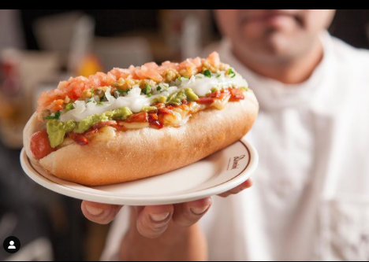
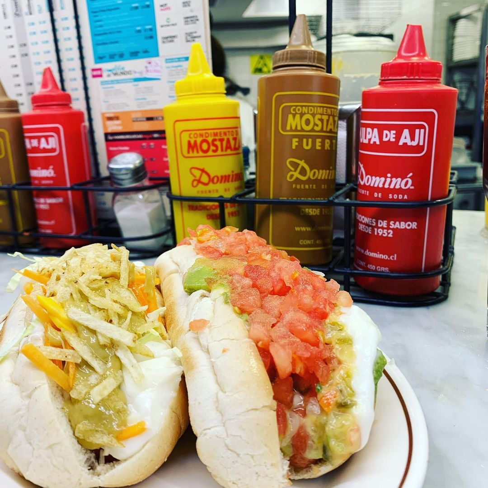

Si es así llegaste al lugar correcto, ya que te comentaremos
un poco de que es el emblematico completo chileno y como nació.

El completo llegó en los años 20 de la mano del comerciante Eduardo Bahamondes, quien había conocido
los “hot dogs”en Estados Unidos y le gustaron tanto que quiso replicarlo en Chile en su propio local.

Así nació “Quick lunch Bahamondes”, ubicado en el Portal Fernández Concha, en la Plaza de Armas de Santiago.
Sin embargo, Bahamondes le dio un gran giro a la clásica receta norteamericana ya que la mostaza y el kétchup
no estaban dentro de los sabores preferidos de los chilenos. Es por eso que preparó el “hog dog” con
nuevos ingredientes como el tomate, la palta, el chucrut, la cebolla y el perejil, y lo bautizó “completo”
por todo lo que tenía.
Fue tan buena la aceptación que empezaron las imitaciones con sus propias variaciones,
tantas que hoy por hoy casi todos los restaurantes tienen sus propios nombres para diferenciarlas.

¿Te gustan los completos?